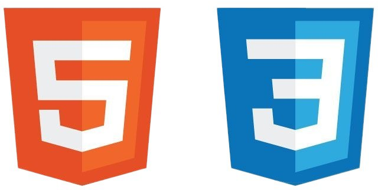

Skills

HTML & CSS

Laravel
Tailwind
JavaScript
Fresh Graduate | Web Developer | UI/UX and AI Enthusiast
I am an Informatics Engineering fresh graduate with a strong interest in Web Development and UI/UX. I have experience as an IT Support and have developed a Laravel-based system as well as a plant disease detection application using CNN. I enjoy learning new things and am ready to adapt in a professional work environment.

HTML & CSS
Laravel
Tailwind
JavaScript